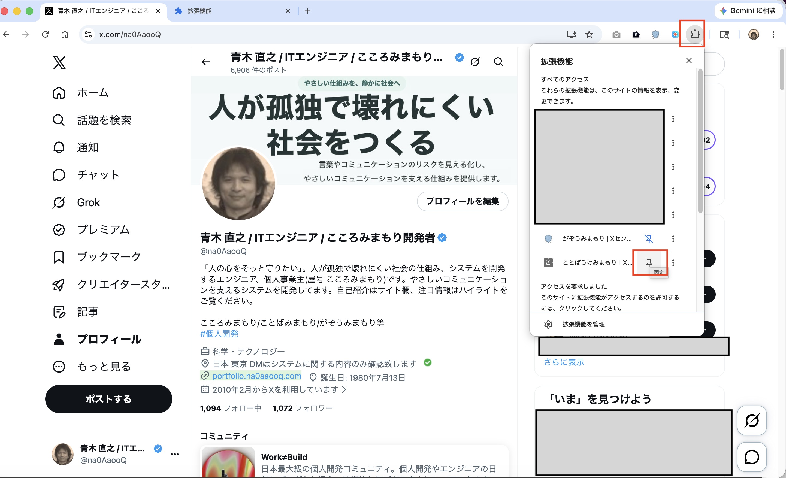
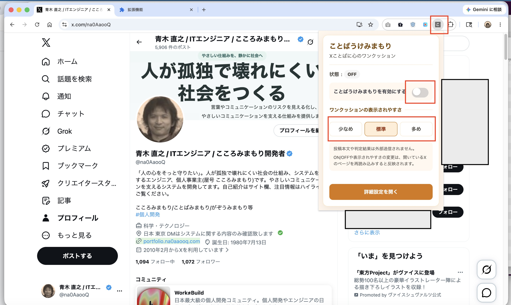
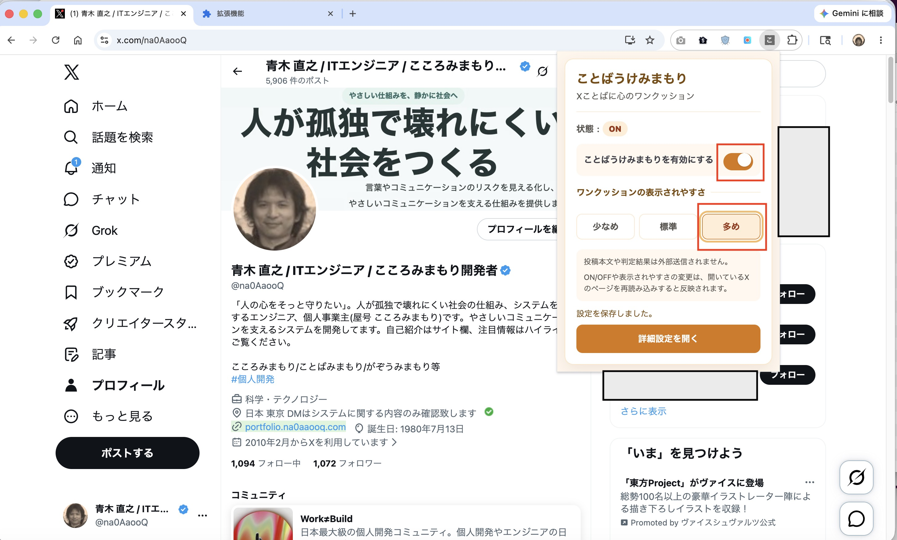
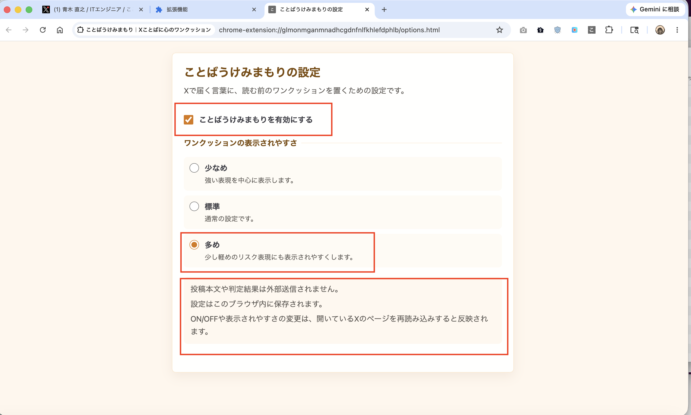
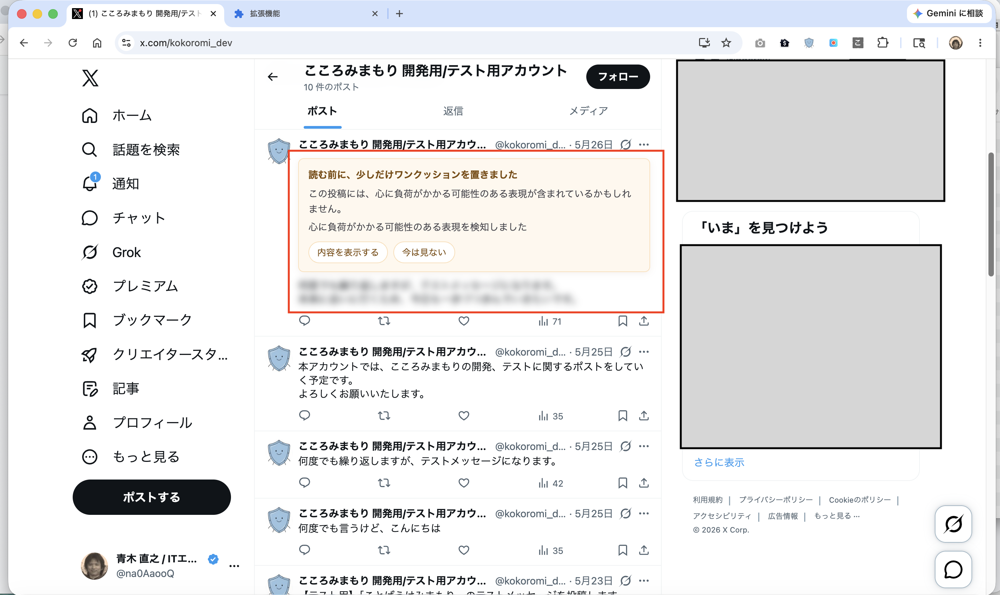
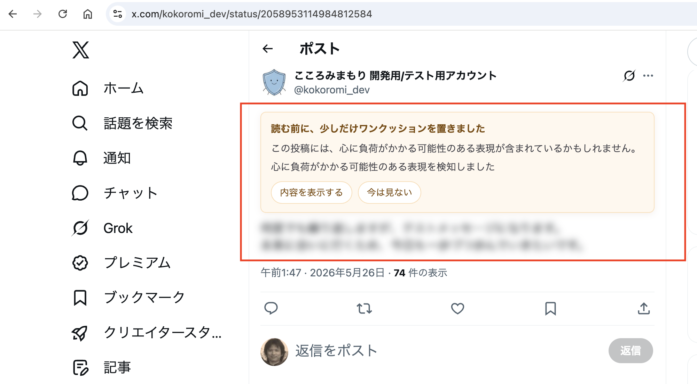
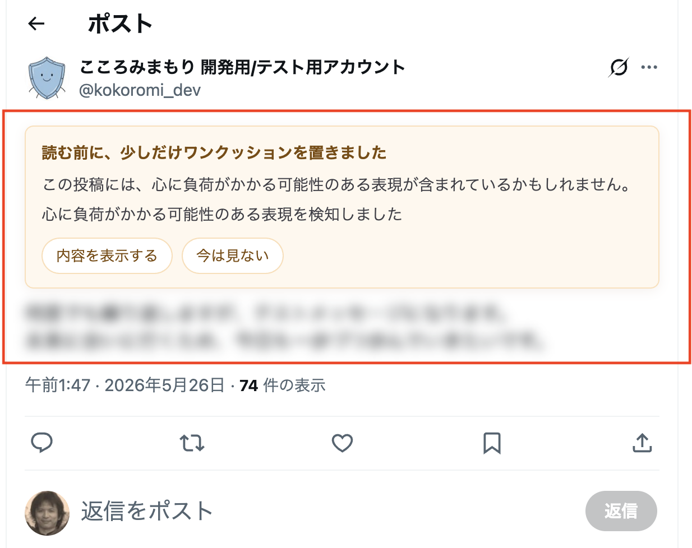
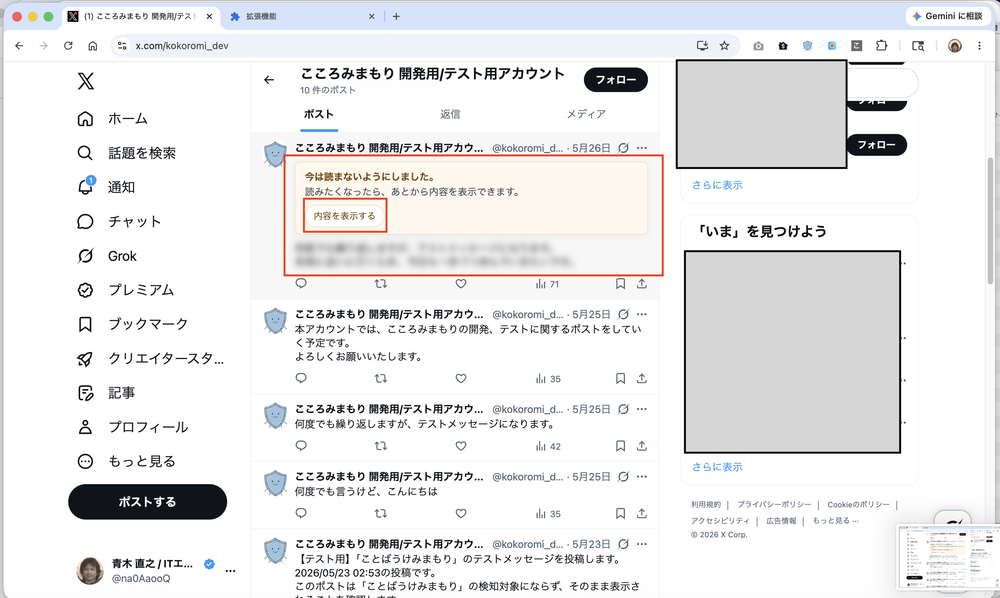
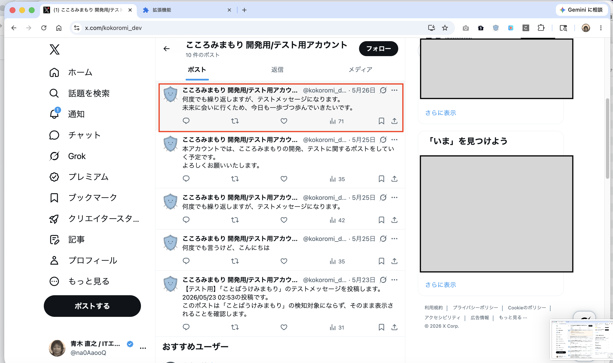

目次
サービス説明資料
ことばうけみまもりの考え方、主な機能、プライバシー面の安心設計をPDFでも確認できます。
サービス説明資料PDFを見る心を守る使い方
ワンクッションが表示されたときの考え方や、「今は見ない」「少し距離を置く」という選択肢を確認できます。
ことばうけみまもりで心を守る使い方1. Chrome ウェブストアから拡張機能を追加する
Chrome ウェブストアで公開中の拡張機能を追加し、ポップアップから有効にして、X（旧Twitter）上でワンクッションの動作を確認します。
- Chrome ウェブストアの「ことばうけみまもり」ページを開きます。
- 「Chrome に追加」をクリックします。
- 注意画面が表示された場合は、内容を確認して「インストールに進む」をクリックします。
- 権限確認画面で「拡張機能を追加」をクリックします。
- 「ことばうけみまもり」がChromeに追加されたことを確認します。
- Chrome右上の拡張機能メニューを開き、「ことばうけみまもり」をピン留めします。
- ツールバーの「ことばうけみまもり」アイコンをクリックし、ポップアップを開きます。
- 必要に応じて拡張機能をONにし、ワンクッションの表示されやすさを「少なめ」「標準」「多め」から選びます。
- X（旧Twitter）の画面を開き、対象の投稿でワンクッションが表示されることを確認します。
- 「今は見ない」をクリックすると、ぼかしを維持したまま、あとから内容を表示できる状態になります。
- 「内容を表示する」をクリックすると、ぼかしが解除され、投稿本文を確認できます。


2. 拡張機能アイコンを固定する
Chrome右上の拡張機能アイコンを開き、「ことばうけみまもり」を固定すると、ツールバーからpopupを開きやすくなります。

3. popupでON/OFF・表示されやすさを設定する
popupから、ことばうけみまもりのON/OFFと、ワンクッションの表示されやすさを変更できます。初期状態はOFFです。使いたいタイミングでONにしてください。
- ON/OFFを切り替えられます。
-
「少なめ」「標準」「多め」からワンクッションの表示されやすさを選べます。
- 少なめ: 強い表現を中心に表示します。
- 標準: 通常の設定です。
- 多め: 少し軽めのリスク表現にも表示されやすくします。
- 設定変更後は、開いているXページを再読み込みすると反映されます。
- 投稿本文や判定結果は外部送信されません。


4. 詳細設定を確認する
popupの「詳細設定を開く」から、オプション画面を開けます。保存するのは、拡張機能のON/OFFと、ワンクッションの表示されやすさの設定だけです。

5. ワンクッションが表示されたとき
ONの状態で、心に負荷がかかる可能性のある表現を判定した投稿には、読む前のワンクッションが表示されます。
- 投稿本文はぼかされます。
- 「内容を表示する」を押すと本文を読めます。
- 「今は見ない」を押すと、本文ぼかしを維持したまま折りたたまれます。
- 投稿本文や投稿DOMを削除するものではありません。



6. 今は見ないを選んだ後
「今は見ない」を選ぶと、今は読まない状態にできます。あとから読みたくなった場合は「内容を表示する」から確認できます。

7. 内容を表示した後
「内容を表示する」を押すと、ぼかしが解除され、投稿本文が通常表示されます。

8. うまく動かないとき
- ON/OFFまたは表示されやすさを変更した後は、開いているX（旧Twitter）の画面ページを再読み込みしてください。
- ワンクッションを止めたい場合は、popupまたはオプション画面でOFFにしてから、X（旧Twitter）の画面ページを再読み込みしてください。
- 拡張機能を追加・更新した後にXページを開いていた場合は、Xページを再読み込みしてください。
現時点では、設定をXの画面へ反映するタイミングをページの読み込み時としているため、設定変更後に再読み込みが必要です。
9. 大切にしていること
「ことばうけみまもり」は、投稿を完全に消すのではなく、読む前に一度立ち止まるためのワンクッションを置きます。いきなり読ませない一方で、読む自由と、今は読まない自由をユーザー自身に残すための補助ツールです。
Xにはミュートするキーワードなどの標準機能があります。本拡張機能はそれらを置き換えるものではなく、投稿を完全に見えなくする前に、読む前のワンクッションを置くための選択肢です。
X（旧Twitter）の投稿本文や判定結果は外部サーバーへ送信されません。判定はブラウザ内で行い、現時点で保存する設定値は enabled と cushionSensitivity のみです。
X（旧Twitter）の閲覧履歴や投稿URL、ユーザー情報、内部判定の詳細は保存せず、自動ブロックや自動通報も行いません。詳しくはプライバシーポリシーについてをご覧ください。